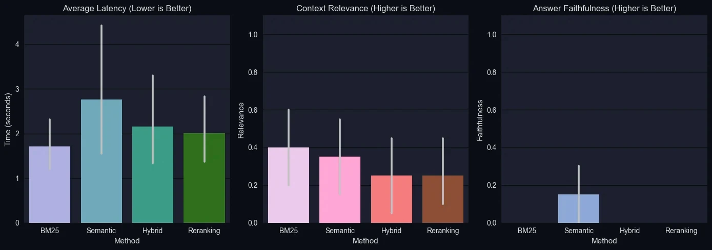
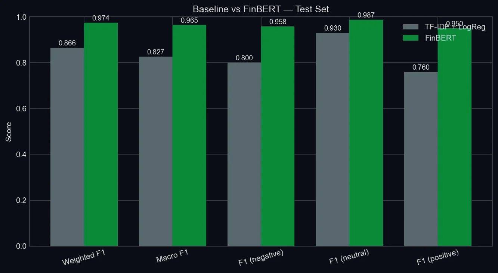
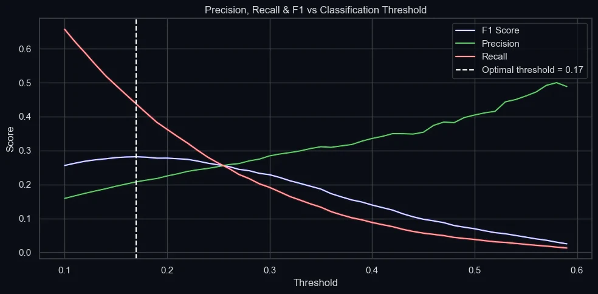
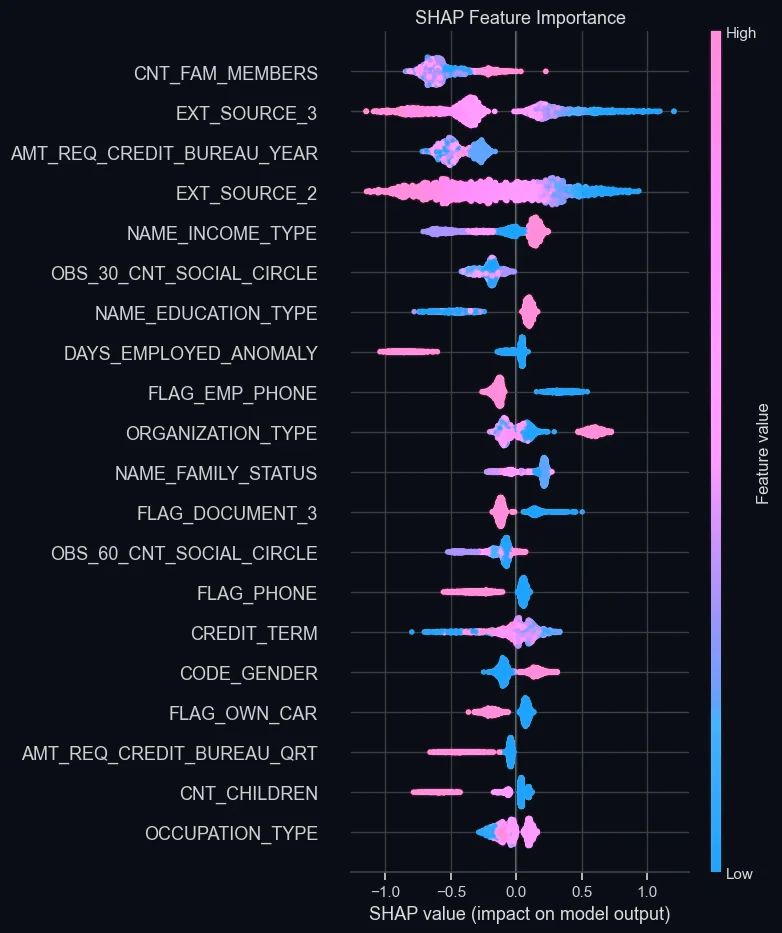
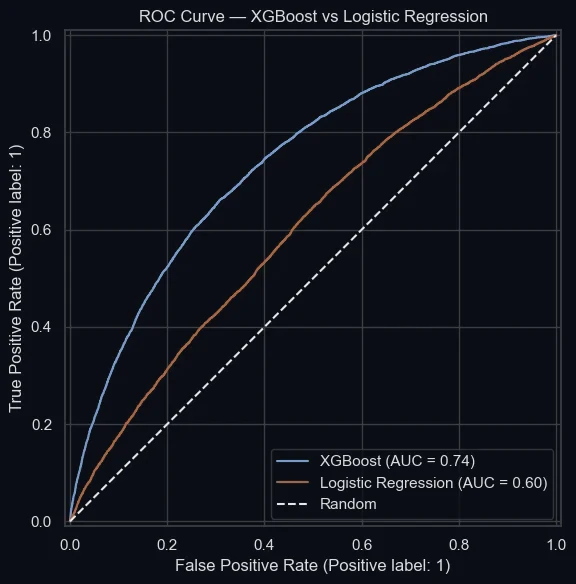
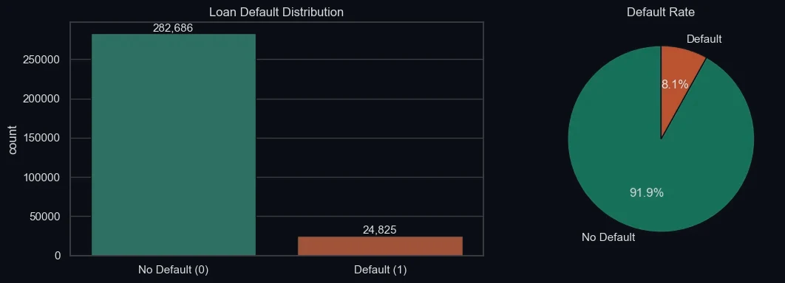

From the sensor to the model
I build machine learning systems and take them to production. Before that I spent over a year on industrial sites, making sensors tell the truth.
Now. Looking for graduate or junior ML and AI engineering roles in London. I like problems where a model has to survive real data: noisy inputs, imbalanced classes, an evaluation worth trusting.

Before. Instrumentation and Control Engineer at Pars Smart Explorers, 2023 to 2024. I configured and installed flow meters and sensor systems across industrial sites and traced faults back through the signal.

Trained. MSc Data Science at Middlesex University, with the Certificate of Best Project for a top five individual project. BSc Electrical Engineering, Shiraz University.
Reach. aamini8118@gmail.com, LinkedIn or GitHub. I live in North Finchley, London.
Selected work
Case studies
Multi-strategy RAG pipelineRetrieval, LLM evaluation77.8% vs 32.0%


Smaller studies
House prices, AmesRegression, KaggleRMSE 0.127 Netflix catalogueExploratory analysis8,807 titlesMoving the line
My loan default model, all 388 trees of it, running in this page. Read the case study
Out of the box, a 0.50 threshold caught 4% of the 4,965 defaulters in the test set.
At 0.18, the threshold I chose by F1, it caught 40%, with precision of 0.24.



- Based in
- London
- Trained as
- Electrical engineer
- Works in
- Python, PyTorch, SQL
Why the sensors matter
On site, a flow meter that reads wrong rarely looks wrong. The number is plausible, the trend is smooth, and the fault only shows when you trace the signal back to the pipe.
I bring that habit to machine learning. Before I trust a model I want to know where its inputs came from, what the baseline scored, and whether the evaluation is grading itself. My dissertation found exactly that problem in my own pipeline, and I wrote it up rather than hide it.
Record
Recognition
- Certificate of Best Project, MScJan 2026
- Top five individual projectsMiddlesex
Certificates
- Retrieval Augmented GenerationDeepLearning.AI
- Associate Data ScientistDataCamp
- Network design, CCNA courseCisco
- SQL IslandCompleted
Away from the keyboard
Teaching
Water and road